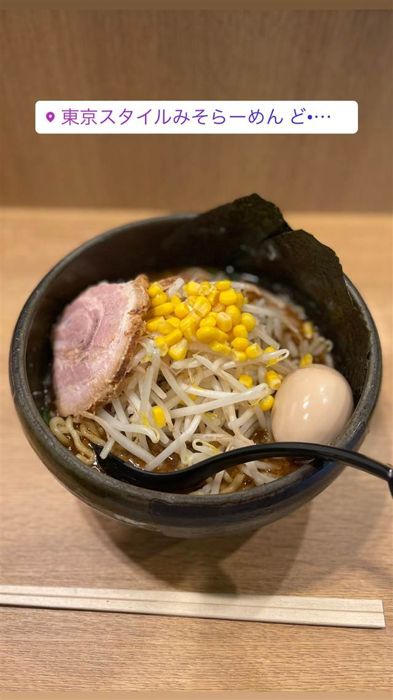
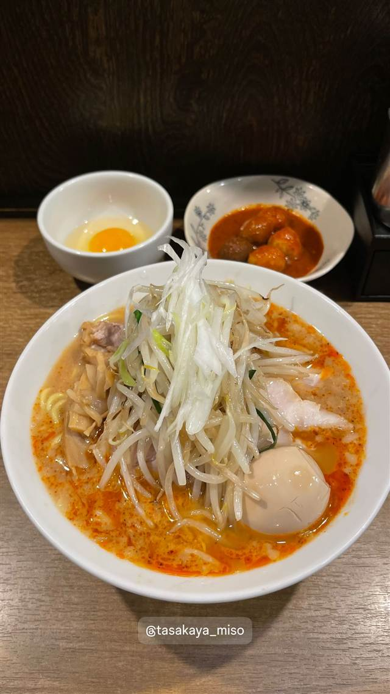
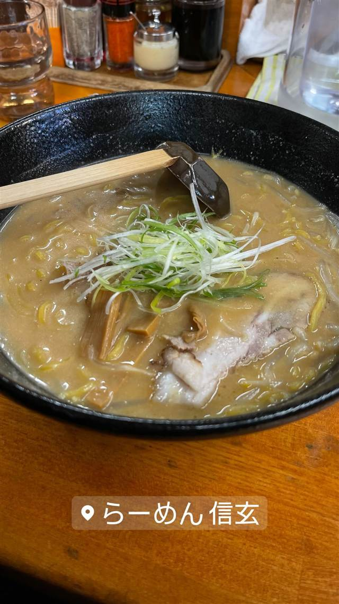
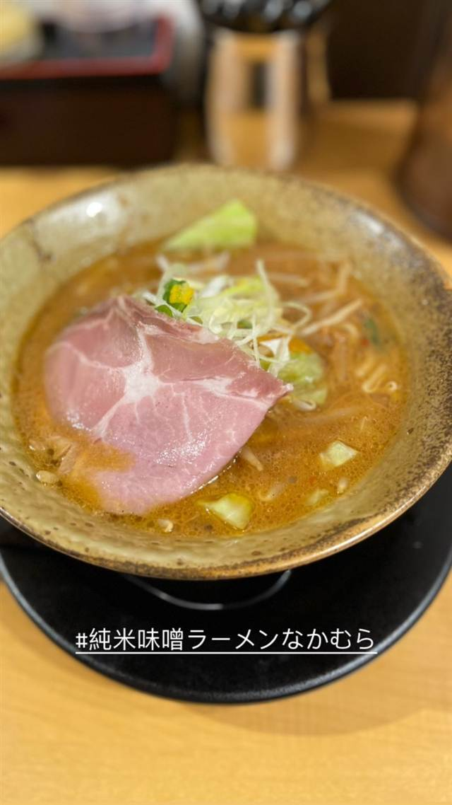
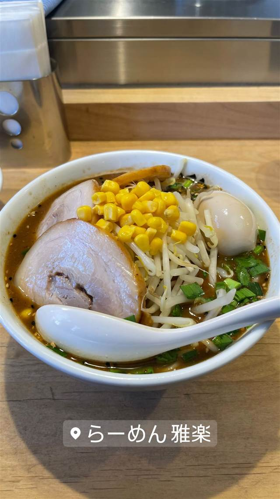

ラーメン · 味噌 · 京橋
東京スタイルみそらーめん ど・みそ 京橋本店
5種の味噌をブレンドした東京スタイルの味噌ラーメン
東京スタイルみそらーめん ど…
2006年、証券会社出身の齋藤賢治氏が創業した東京みそラーメンの代表格。5種の味噌をブレンドしたタレと、丼の中で動物系・魚介系スープを合わせる「東京スタイル」製法、浅草開化楼特注のもちもち麺が持ち味。
TRIVIA
豆知識
- 麺は名店御用達の製麺所「浅草開化楼」に特注
- 創業者は元・大手証券会社勤務からラーメン業界に転身した異色の経歴
REVIEWS
世間の評判
91.4ラーメンDB
背脂と山椒が効いた濃厚味噌
- 背脂と山椒がしっかり効いた濃厚な味噌スープの完成度を評価する声が多い
- 浅草開化楼の中太ちぢれ麺を硬めで注文する常連が多いという声がある
- もやしやコーンなど野菜がたっぷりで食べ応えがあるという意見がある
- 5種の味噌をブレンドした奥行きのある味わいを評価する声もある
ラーメンデータベース 口コミ523件・最新 2026-08
| 創業 | 2006年創業（「らーめんダイニング ど・みそ」として） |
|---|---|
| 看板 | 味噌ラーメン |
| こだわり | 全国から選んだ5種類の味噌を独自ブレンドした味噌ダレと、動物系・魚介系のダブルスープを丼の中で合わせる「東京スタイル」製法。麺は開業約1年後から製麺所「浅草開化楼」と相談して作った特注麺で、国産小麦2種にタピオカ粉を配合したもちもち麺 |
| どこから | 都心 |
| 営業時間 | 月〜金 10:30-22:30 土・日 10:30-21:00 |
| 予算 | 昼 ¥1,000～¥1,999 夜 ¥1,000～¥1,999 |
| 定休日 | 無休 |
| 場所 | 京橋 東京都中央区京橋3-4-3 千成ビル1F |
食べたもの：味噌ラーメン
NEARBY
近い店・同じ系統の店
-

味噌 池袋駅 味噌麺処 田坂屋 花道庵で5年半修行し公認で独立した濃厚味噌ラーメン 昼 ～¥999 夜 ～¥999 -
 味噌 蒲田駅
らーめん蓮 蒲田本店
元プロボクサーの店主が仕上げる泡立てまろやかな味噌らーめん
昼 ¥1,000～¥1,999 夜 ¥1,000～¥1,999
味噌 蒲田駅
らーめん蓮 蒲田本店
元プロボクサーの店主が仕上げる泡立てまろやかな味噌らーめん
昼 ¥1,000～¥1,999 夜 ¥1,000～¥1,999
-

味噌 地下鉄南北線すすきの駅 らーめん信玄 南6条店 バター味噌ラーメンを考案した元祖店で50時間煮込む清湯スープが看板 昼 ~¥999 夜 ~¥999 -

味噌 目黒 純米味噌らーめん なかむら 元二郎系店主がラーメン学校で学んだ香り高い米みそ 昼 ¥1,000～¥1,999 夜 ¥1,000～¥1,999 -
 味噌 御成門
麺恋処 き楽
代々木の人気店いそじの姉妹店、もちもち麺の豚骨魚介つけ麺
昼 ¥1,000～¥1,999 夜 ¥1,000～¥1,999
味噌 御成門
麺恋処 き楽
代々木の人気店いそじの姉妹店、もちもち麺の豚骨魚介つけ麺
昼 ¥1,000～¥1,999 夜 ¥1,000～¥1,999
-

味噌 あざみ野 らーめん 雅楽（ガラク） 「ど・みそ」仕込み、7種の味噌をブレンドした濃厚味噌ラーメン 昼 ～¥999 夜 ～¥999